数据分析 · 应用平台搭建DiCA · 基于分布的聚类分析平台
DiCA（Distribution-based Clustering Analysis）是一个以分布函数描述对象行为、刻画行为模式差异的聚类分析平台。 它将聚类对象的大量重复观测记录提炼为经验分布，再依据分布之间的差异将对象聚为行为模式相似的簇， 从而在无需人工构造特征的情况下还原不同的行为模式。DiCA 平台可在浏览器上直接完成聚类计算， 并且不保存用户数据、无隐私安全方面的隐患（上传 CSV 即可完成聚类，计算通过 JavaScript 代码执行，数据不离开浏览器）。
✦ 论文发表 Publications
2026- Zhu, Y., Huang, D. (2026). A Communication Efficient Boosting Method for Distributed Spectral Clustering. Pattern Recognition, 176, 113168. (JCR Q1·中科院1区TOP·IF 9.1)
- Zhu, Y., Bao, Y., Qin, L., Sun, Q., Shia, B., Chen, M. (2026). Resilience Analysis based on Multi-Layer Network Community Detection of Supply Chain Network. Annals of Operations Research, 361, 1447–1471. (JCR Q2·ABS 3星·IF 4.1)
- Qin, L., Zhang, X., Zhu, Y.*, Chen, Y., Shia, B. (2026). Bilateral Matrix Spatiotemporal Autoregressive Model. Computational Statistics & Data Analysis, 215, 108291. (JCR Q2)
- Qin, L., Wang, Y., Zhu, Y., Shia, B. (2026). A Universal Kriging Predictor for Probability Density Function based on Gaussian Mixture Model. Journal of Forecasting, 45(3), 1188-1202. (JCR Q2)
- 秦磊, 陈阳, 朱映秋*, 谢邦昌 (2026). 矩阵值时间序列的时空自回归模型及其应用. 统计研究, 2026, 43(04): 146-160. (AMI 权威期刊·CSSCI)
- Zhu, Y., Li, J., Qin, L., Yang, J., Chen, M. (2026). SGCN: A Robust Subsampling-Based GCN for Large-Scale Network with Out-of-Distribution Nodes. Annals of Operations Research. https://doi.org/10.1007/s10479-026-07269-9 (JCR Q2·ABS 3星·IF 4.1)
- Wang, Y., Zhu, Y., Shia, B., Chen, M., Qin, L. (2026). Density Prediction of Income Distribution based on Mixed Frequency Data. Applied Economics. https://doi.org/10.1080/00036846.2026.2649920 (JCR Q2)
- Zhu, Y., Huang, D., Zhang, B. (2025). A Wasserstein Distance-Based Spectral Clustering Method for Transaction Data Analysis. Expert Systems With Applications, 260, 125418. (JCR Q1·中科院1区TOP·IF 9.4)
- Qin, L., Wang, Y.*, Zhu, Y.*, Shia, B. (2025). Bayesian Dynamic Matrix Factor Models. Journal of Business & Economic Statistics, 43(4), 1170–1182. (JCR Q1·ABS 4星)
- Zhu, Y., Wang, Y., Qin, L., Zhang, B., Shia, B., Chen, M. (2025). Naïve Bayes Classifier based on Reliability Measurement for Datasets with Noisy Labels. Annals of Operations Research, 349, 259-286. (JCR Q2·ABS 3星·IF 4.1)
- Qin, L., Zhu, Y.*, Liu, S., Zhang, X., Zhao, Y. (2025). The Shapley Value in Data Science: Advances in Computation, Extensions, and Applications. Mathematics, 13(10), 1581. (JCR Q1)
- Xu, K., Zhu, Y.*, Liu, Y., Wang, H. (2025). CluBear: A Subsampling Package for Interactive Statistical Analysis with Massive Data on a Single Machine. Communications in Statistics-Simulation and Computation, 54(6), 1966–1986.
- Xiao, Y., Zhu, Y.*, Huang, D. (2025). Adaptive Subsampling Spectral Clustering based on Second-Order Neighbour Relationships for Sparse Networks. Stat, 14(4), e70098.
- Wang, W., Qin, L., Wang, Y., Ye, L., Wang, R., Zhu, Y.* (2025). Frequent Use of Online Medical Records: Analysis of Influence Factors based on Structural Equation Modeling. Frontiers in Public Health, 13, 1609503. (JCR Q1·IF 4.1)
- Yin, H., Wang, L., Zhu, Y., Zhu, L., Huang, D. (2025). Vertical Federated Feature Screening. In The Thirty-ninth Annual Conference on Neural Information Processing Systems (NeurIPS). (CCF-A·人工智能领域顶会)
- 朱映秋, 郑畅, 张波 (2025). 金融时间序列的自适应贝叶斯在线变点检测. 统计研究, 42(01), 145-160. (AMI 权威期刊·CSSCI)
- 秦磊, 王寅智, 朱映秋, 谢邦昌 (2025). 已知组结构下混频时间序列的潜在因子分析. 系统工程理论与实践, 45(3): 1014-1028. (AMI 核心期刊·CSSCI)
- Zhu, Y., Wang, R., Feng, M., Qin, L., Shia, B., Chen, M. (2024). Supply Chain Analysis based on Community Detection of Multi-Layer Weighted Networks. Mathematics, 12(22), 3606. (JCR Q1)
- Zeng, Q., Zhu, Y.*, Zhu, X., Wang, F., Zhao, W., Sun, S., Su, M., Wang, H. (2024). Improved Naive Bayes with Mislabeled Data. Statistics and Its Interface, 17(3), 323-336.
- Wang, Y., Zhu, Y., Sun, Q., Qin, L. (2024). Adaptively Robust High-Dimensional Matrix Factor Analysis under Huber Loss Function. Journal of Statistical Planning and Inference, 231, 106137.
- Deng, J., Huang, D., Ding, Y., Zhu, Y., Jing, B., Zhang, B. (2024). Subsampling Spectral Clustering for Stochastic Block Models in Large-Scale Networks. Computational Statistics & Data Analysis, 189, 107835. (JCR Q2)
- 朱映秋, 黄丹阳, 张波 (2024). 基于高斯混合模型的分布因子聚类方法. 统计研究, 41(06), 147-160. (AMI 权威期刊·CSSCI)
- 陈阳, 张晓梅, 朱映秋, 秦磊 (2024). 矩阵值时间序列自回归模型的稳健估计. 应用数学学报, 47(6): 999-1026.
- Pan, R., Zhu, Y.*, Guo, B., Zhu, X., Wang, H. (2023). A Sequential Addressing Subsampling Method for Massive Data Analysis under Memory Constraint. IEEE Transactions on Knowledge and Data Engineering, 35(9), 9502-9513. (JCR Q1·中科院1区TOP·IF 11.6)
- 黄丹阳, 罗伊琳, 朱映秋* (2023). 面向第三方支付平台非结构化大数据分布特征的融合聚类算法. 经济管理学刊, 2(3), 179-208.
- 黄丹阳, 朱映秋, 南金伶, 王汉生 (2023). 基于交易流水的信用卡套现交易及商户识别. 数理统计与管理, 42(01), 127-144. (AMI 核心期刊·CSSCI)
- Zhu, Y., Deng, Q., Huang, D., Jing, B., Zhang, B. (2021). Clustering Based on Kolmogorov–Smirnov Statistic with Application to Bank Card Transaction Data. Journal of the Royal Statistical Society: Series C (Applied Statistics), 70(3), 558-578. (JCR Q2)
- Zhu, Y., Huang, D., Gao, Y., Wu, R., Chen, Y., Zhang, B., Wang, H. (2021). Automatic, Dynamic, and Nearly Optimal Learning Rate Specification via Local Quadratic Approximation. Neural Networks, 141, 11-29. (JCR Q1·中科院2区TOP·IF 7.2)
- Wang, F., Zhu, Y., Huang, D., Qi, H., Wang, H. (2021). Distributed One-Step Upgraded Estimation for Non-Uniformly and Nonrandomly Distributed Data. Computational Statistics & Data Analysis, 162, 107265. (JCR Q2)
- 朱映秋, 张波 (2021). 基于已实现波动率的上证综指异常时序检测. 系统工程理论与实践, 41(3), 625-635. (AMI 核心期刊·CSSCI)
- 黄丹阳, 毕博洋, 朱映秋 (2021). 基于高斯谱聚类的风险商户聚类分析. 统计研究, 38(6), 145-160. (AMI 权威期刊·CSSCI)
- Zhu, Y., Huang, D., Xu, W., Zhang, B. (2020). Link Prediction Combining Network Structure and Topic Distribution in Large-Scale Directed Network. Journal of Organizational Computing and Electronic Commerce, 30(2), 169-185.
- Guo, D., Zhu, Y., Yin, W. (2018). OSCAR: A Framework to Integrate Spatial Computing Ability and Data Aggregation for Emergency Management of Public Health. GeoInformatica, 22(2), 383-410. (JCR Q2)
- Li, G., Yang, X., Xu, W., Zhu, Y. (2017). Social Embeddedness and Customer-Generated Content: The Moderation Effect of Employee Participation. Journal of Electronic Commerce Research, 18(3), 245-253. (JCR Q2)
- 杨微石, 郭旦怀, 逯燕玲, 王德强, 朱映秋, 张宝秀 (2017). 基于大数据的文化遗产认知分析方法——以北京旧城中轴线为例. 地理科学进展, 36(9): 1111-1118. (AMI 核心期刊·CSSCI)
- Guo, D., Zhu, Y., Xu, W., Shang, S., Ding, Z. (2016). How to Find Appropriate Automobile Exhibition Halls: Towards a Personalized Recommendation Service for Auto Show. Neurocomputing, 213, 95-101. (JCR Q1·IF 6.7)
- Guo, D., Zhou, Y., Zhu, Y., Li, J. (2016). Species Distribution Modeling via Spatial Bagging of Multiple Conditional Random Fields. In International Conference on Database Systems for Advanced Applications (DASFAA) (pp. 437-450). (CCF-B·数据库领域)
- Li, G., Yang, X., Xu, W., Zhu, Y. (2016). Customer-generated content in company social media platform: How social network works? In 2016 IEEE International Conference on Management of Innovation and Technology (ICMIT) (pp. 188-192).
- Zhang, D., Xu, W., Zhu, Y., Zhang, X. (2015). Can sentiment analysis help mimic decision-making process of loan granting? A novel credit risk evaluation approach using GMKL model. In 2015 48th Hawaii International Conference on System Sciences (HICSS) (pp. 949-958).